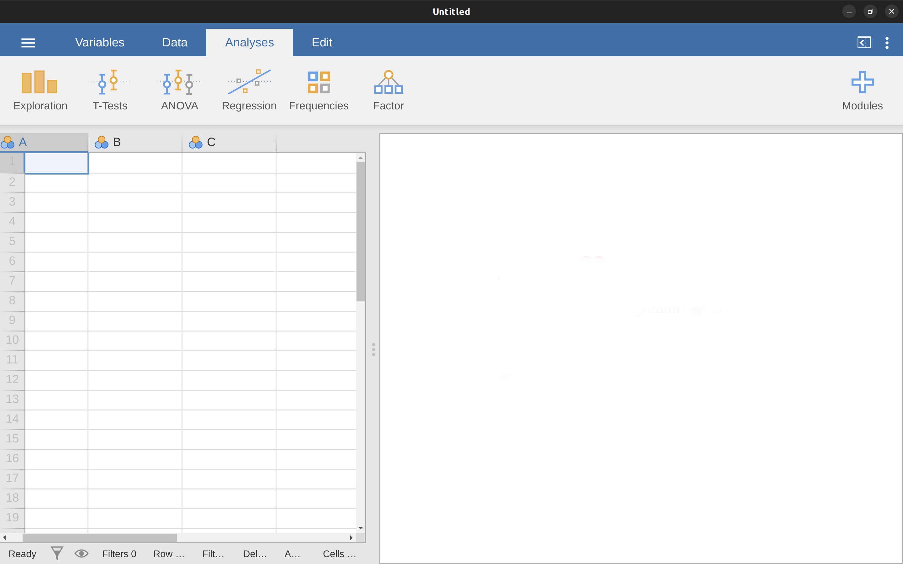
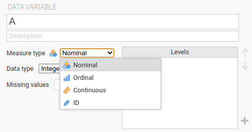
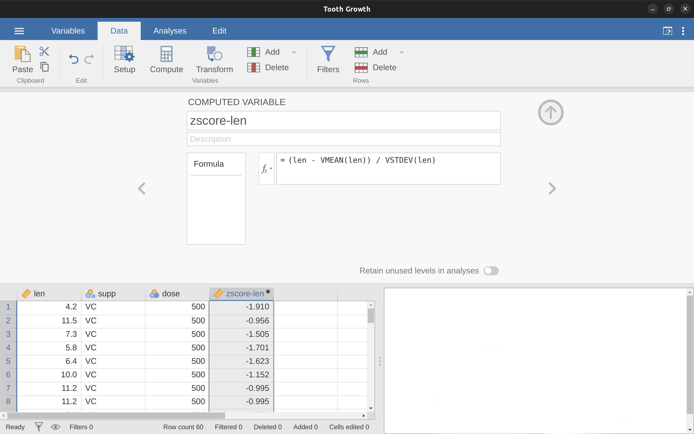
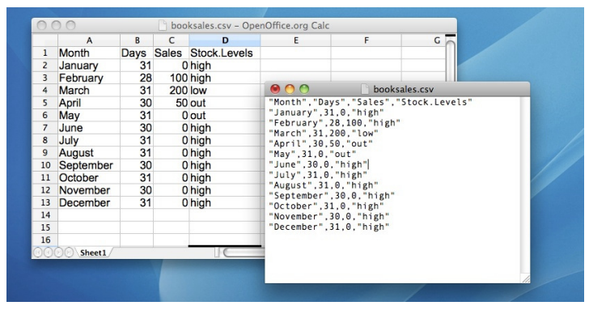
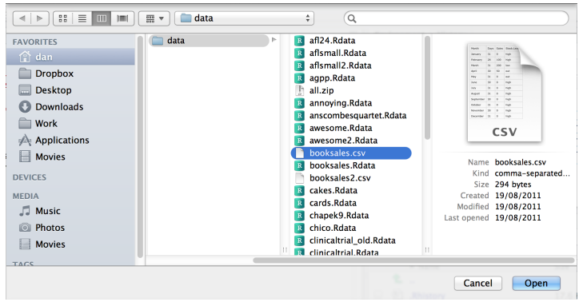
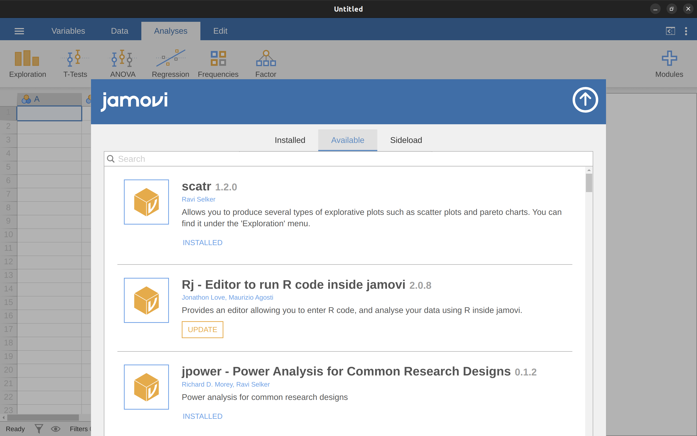

3 與jamovi的第一次接觸
Robots are nice to work with.
這一章開始正式談如何使用jamovi。其中一部分簡單說明如何下載及安裝jamovi，較多篇幅介紹jamovi的介面以及引導讀者上手使用。本章先將統計概念擺一邊，主要目標是幫助讀者了解jamovi的運作方式以及輕鬆上手。讀者將先花點時間了解內建資料集還有變項欄位，藉此感受並理解jamovi的運作方式。
不過在繼續介紹之前，我(原作者)想和讀者們稍微聊聊使用jamovi的理由。每位讀者需要閱讀這本書應該有各種不同的理由。如果你的主要理由是“因為這是我的統計課指定學習的統計軟體”，那麼你的授課教師應該好好解釋為什麼要同學們學習jamovi。因為我(原作者)不是你的主課老師，無法推測他選擇jamovi的理由，所以讓以下是我自己使用jamovi教學的想法。
- 最顯而易見的理由：用電腦做統計作業，是比用紙筆做作業更快速、簡單、且更有效的方式。電腦擅長處理任何無需思索的重覆性作業，而大多數統計計算是不需思索且重覆的。對大多數學生來說，用紙筆進行統計計算都是基於學習需要。我(原作者)的課堂有時候也會要求學生做些紙筆計算，不過是基於我個人的教學目的。在某些狀況紙筆計算能幫助同學掌握“統計感”，值得認真做一次，不過只要一次就好！
- 使用試算表軟體(例如微軟Excel)進行統計分析其實並非長久之計。雖然試算表軟體對許多人來說是比較熟悉的，但是這些軟體能執行的統計分析相當有限。如果你有使用試算表軟體分析現實生活數據的習慣，會把自已困在一個不易擺脫的操作慣性。
- 許多商用套裝統計軟體(讀者會經常聽到的那些)的學生版非常便宜，不過功能完整的”教育版“價格通常讓像我一樣的老師們卻步，因為軟體公司也會販售價格高昂的企業版。軟體公司的策略是養成學生讀者在求學階段對產品的依賴，畢業進入社會後會持續使用他們的產品。儘管大公司的經營策略有待商榷，可以不用的話沒有人想花幾千塊美金購買。不過用這本書學統計的讀者有機會不必依賴這些商用套裝統計軟體。只要學會使用像jamovi這種開源且免費的軟體，同學們可以終身遠離軟體公司的付費陷阱。
jamovi 基本上是免費的 R 統計語言的高級前端介面，這是你現在可能不會接觸到，但將來做資料分析時會喜歡的玩意。下載安裝R語言後，你會得到所有基本且功能強大的“套件”。由於 R 語言是開放系統而且使用場景廣泛，它已經成為一種統計學的標準工具，很多人還會編寫和套件擴充系統功能，而且這些套件也是免費的。最近我(原作者 )發現的一個越勢，越來越多進階資料分析教科書，內容範例都是使用 R 語言。
以上是我決定使用jamovi的主要理由。雖然jamovi並不是沒有缺點。jamovi是相對較新的軟體1，沒有什麼教科書與其他資源支援學習，而且jamovi有一些令人討厭但不得不忍受的小缺陷。不過總體來說，我認為jamovi的優點大於缺點；比我用過的其他同類型軟體功能更優秀且更好使用。
3.1 安裝jamovi
好啦，推銷結束。開始上課吧。就像任何應用軟體，jamovi需要安裝能執行各種軟體工具還有免費遊戲的”電腦”。這樣說好像”電腦”和各家平板沒什麼分別，不過如果你有使用套裝軟體的經驗，你就會懂我的意思。無論如何，jamovi可從網路免費取得，現誰你可以從jamovi官網https://www.jamovi.org/下載安裝程式2。
首先在官網首頁按下”jamovi Desktop”的大標題按鈕，讀者會看到給Windows, Mac, 還有Linux作業系統使用者的各種安裝程式超連結。只要點選符合同學用的作業系統規格，就能按照視窗指示完成下載安裝程序。翻譯這本電子書時，jamovi版本已經來到2.3.21，請留意每隔幾個月會有新版本上架，有需要的話得要安裝新版本。3
3.1.1 啟動jamovi
不論讀者的作業系統是什麼，安裝成功就可以啟動jamovi開始第一次接觸。首次啟動的jamovi視窗介面應該像 圖 3.1。
視窗左半區塊很像Excel試算表(本書名稱”試算表介面”），右半區塊是顯示統計測試結果的地方（以下稱”報表介面”）。中間邊界線區隔區塊範圍，使用者可以水平拖曳改變左右區塊的面積。
使用者可以在試算表區域的任意格子內輸入任何值，就像使用試算表軟體一樣。還有，已存在電腦裡的資料檔案是CSV (.csv)的話，可以直接載入jamovi。另外，jamovi可以直接載入SPSS, SAS, Stata, 還有JASP等軟體的資料格式檔案。要開啟檔案請先選擇管理面板的File(按左上角三條橫線開啟)，再選擇’Open’，然後從’Browse’視窗選擇你要載入的檔案，這種操作可以開啟範例檔案或已存在的資料檔案。
3.2 分析模組
如 圖 3.1 界面上方的一排圖示是可以選擇使用的分析方法模組。選好要使用的分析方法，就會出現該模組的“選項視窗”。“選項視窗”可以指定要分析的變項，選擇分析方法的設定。任何在“選項視窗”的有效動作，會在報表介面顯示分析結果，每次增加或修改設定都會即時更新報表介面內容。
只要你認為報表介面顯示的結果已經足夠，按下“選項視窗”右上角巨大的右箭頭，就能關閉“選項視窗”。若是想再重新調整選項，只要在報表介面任何一處點一下，就可以重新開啟“選項視窗”。這樣的操作讓你或你的同伴回顧報表結果如何生成。
若是報表介面內的某項分析結果不再需要了，你也可以透過副選單移除這項分析結果。以滑鼠右鍵點擊要移除的結果，就會跳出副選單。選擇副選單的Analysis，再選擇Remove就能移除結果。這些就是jamovi的基本操作，接著我們會看到更多。首先來了解試算表介面有什麼功能可以操作。
3.3 資料試算表
載入jamovi的資料是以試算表的模樣呈現在試算表介面，每一欄代表“變項”，每一列代表一筆“個案”或“受測者”。
3.3.1 變項
jamovi試算表介面最常見的變項是資料變項(Data Variables)4，純粹展示從資料檔匯入的數值，或者使用者自行輸入的數值。每個資料變項能設定為各種測量級別(見 圖 3.2 )

變項標題旁的圖示提示使用者每個變項的測量級別。ID是jamovi特有的變項型態。這個型態用來表示不會放進分析模組的變項。像是參與者姓名或者編號。在處理規模巨大的資料集時，指定某些變項為ID能提供運算效率。
名義變項(Nominal)是表示數值是文字標籤的類別變項，像是性別的標籤是”男”,“女”,“跨性別”等名義數值。人名也是一樣。名義變項數值也可以用數字表現。某些資料集的名義變項會用數字而不是文字做為標籤，像是男生表示為1，女生表示為2。稍後介紹的“變項編輯器”，可以將數字轉換為“人類可讀的”標籤。
次序變項(Ordinal)很像名義變項，除了數值之間有順序性。例如李克特七點量表的數值3代表”非常同意”，數值-3代表”非常不同意”。
連續變項(Continuous)表示來自連續量表的數值，像是身高或體重。又稱”等距尺度“(Interval scale)或”等比尺度“(Ratio scale)。
除此之外，使用者還可以設定資料型態：包括”文字”(Text)，“整數”(Integer)，“十進制小數”(Decimal)。
在空白試算表內任意輸入任何數值，jamovi會根據你輸入的資料自動判斷變項的資料型態。你可以借助這套功能掌握什麼樣的資料適用何種變項尺度。開啟一份資料檔時，jamovi也會自動判斷每一欄的資料型態。不過自動判斷的資料型態不一定是正確的，有必要的話你需要使用變項編輯器手動設定正確的資料型態。
在資料面板(Data)點選Setup圖示或雙擊變項標題都能開啟變項編輯器。在變項編輯器的介面，你可以更改變項名稱、更動變項型態、標籤順序、還有標籤文字。任何變動馬上會在試算表介面看到改變的效果。要關閉變項編輯器，只要點選右上角的向上箭頭。
要增加或插入新變項，只要點選資料面板上方的Add圖示。不只是增加資料變項，也能增加計算變項(computed variables)
3.3.2 自訂計算變項
計算變項存儲其他變項的計算結果。可存儲的數值相當多樣，像是log轉換，z分數，變項數值總和，正負轉換與跨變項平均值。
在資料面板上方按下Add圖示，就能在已匯入的資料變項之間插入計算變項。接著會出現方程式編輯區讓你設定計算公式。常用的四則運算符號都能輸入，以下是一些可輸入的公式：
A + B
LOG10(len)
MEAN(A, B)
(len - VMEAN(len)) / VSTDEV(len)
以上公式依序是變項A與變項B的總和，變項len的log轉換(底數為10)，變項A與變項B的平均值，以及變項len的z分數5。 圖 3.3 示範建立新變項存儲變項len的z分數(這份資料來自Tooth Growh練習資料集)。

zscore-len存放變項len的z分數。3.3.2.1 垂直計算函式
圖 3.3 的面板裡有個可開啟捲動清單的 \(f_x\) 圖示，能選擇已內建的函式。其中有些以V開頭的函式是垂直計算函式。相對於沒有V開頭的同名函式，垂直計算函式用於計算資料變項的總計數值。例如函式MEAN(A, B)是計算變項A與變項B同一列的平均值，而函式VMEAN(A)製造的計算變項內容都是變項A的平均值。
3.3.3 複製貼上
jamovi產生的報表內表格及統計圖符合美國心理學會(APA)建議的學術發表格式。使用者可以使用內建的複製貼上功能，將圖表加到WORD文件、或者email裡給同事。直要對想複製的圖表以滑鼠右鍵點選，開啟副選單即可選擇複製功能。透過副選單能指定要複製報表裡的某張圖或整個分析表格。jamovi複製的操作與其他應用程式的操作完全相同。在稍後的分析示範裡你可以練習看看。
3.3.4 程式碼模式
jamovi提供”R程式碼模式”(R Syntax Mode)。開啟此模式能檢視分析模組後台的R程式碼。從jamovi主畫面右上方開啟系統設定面板(圖示是三個垂直小點)，勾選”Syntax Mode)旁邊的核取方塊就能開啟或關閉。
“R程式碼模式”開啟時運作方式沒有不同，除了每份報表會增加R程式碼，還有表格會以ASCII碼的模式輸出，如同R語言的終端介面。如果你有支援編譯R語言的軟體，可以直接將R程式碼複製到編譯介面測試看看。至此還沒有正式載入任何資料，所以你看到的R程式碼複製到編譯介面，並不會產生任何結果。如果你有興趣測試的話，網路上有許多學習資源，等著你去發掘。
3.4 載入資料檔案
在實際的資料分析場景裡，我們通常要處理好幾份不同格式的檔案。本書示範的資料分析所處理的檔案主要有兩種格式：
jamovi專案檔(.omv) 這是jamovi儲存資料，變項及分析結果的標準檔案格式。
逼號分隔值文字檔(.csv) 歷史最久的標準文字檔案格式，可以處理文字檔案的軟體幾乎都可以開啟。由於格式簡單，專業統計分析人員首選以csv格式儲存資料。
jamovi也能載入其他格式的資料檔案。最新版本支援開啟微軟Excel試算表檔案(.xls)，還有市場佔有率高的商用套裝統計軟體，如SPSS、SAS的資料格式檔案。無論你要處理的資料是用那種格式儲存，強烈建議先新增一個或一群資料夾，分別儲存資料檔案或jamovi檔，以便定期備份。
3.4.1 匯入csv格式資料檔
在現代資料分析軟體發展史裡，到處都能見到csv檔的身影。csv檔可儲存任何表格化的資料，如同 圖 3.4 展示的本章示範資料檔 booksales.csv 。每一列記錄每個月書籍銷售資料，不過第一列不是資料，而是變項名稱。

jamovi能輕鬆開啟csv檔。按下主畫面左上角三條平行線的圖示鈕開啟面板，點選Open，再點選This Device，就能從個人電腦資料夾裡選擇要開啟的csv檔6。 圖 3.5 是以Mac作業系統展示瀏覽和選取檔案的畫面。我相信讀者應該熟悉自己使用的設備，應該能找到自己想匯入的csv檔。請放手試試看吧。

這裡有些標記提示，能幫助你開啟的csv資料檔案能順利進行分析：
- 變項名稱。確認csv檔第一列是各變項的名稱。如同 booksales.csv 的示範。
- 小數點。確認數字資料的小數點是以英文句號(.)表示。在英語系國家是慣例，但是部分如東歐國家是以英文逼號(,)表示小數點。
- 引號。變項名稱與文字資料都會放在兩個引號(“)之間，jamovi會以引號自動判斷變項資料的型態。請參考 booksales.csv 的示範。
3.5 匯入非示範格式的資料檔
本書的示範資料都是以jamovi專案檔(.omv)或csv文字檔提供讀者操作7。不過在你的實際統計實務場景，非常有可能遇到各式各樣的資料檔。這個小節我分享一些很多人常遇到的其他格式的資料，以及不合乎格式的資料檔處理技巧。
3.5.1 格式純出錯的文字資料檔
首先來談談遇到純文字資料檔案不符合csv格式，要如何修正才能讓jamovi開啟。出錯的地方大致來自以下幾個細節，有時需要邊修邊試，才能讓純文字資料檔案符合csv格式：
- 變項名稱。通常第一列應該是變項名稱而非資料，如果不是的話jamovi可以開啟，但是無法做正確的資料分析。這種狀況可以用試算表軟體重新開啟，手動編輯應該有的變項名稱。
- 欄位間隔。合格的csv檔以半形逗號(,)區隔變項欄位，不過有些歐洲國家習慣用半形逗號代表小數點，因此csv檔的欄位間隔是以半形分號(;)代表。台灣各單位資料的csv檔會混合使用半形逗號與製表鍵(Tab鍵)代表欄位間隔。如果遇到請先置換並存檔後再用jamovi開啟。
- 引號。如同 booksales.csv 的示範，csv資料檔案內的文字資料都是包 在兩個半形雙引號(“)之間。有的csv資料檔案會用半形單引號(’)。
- 跳列資訊。有的csv檔案內會在開頭幾行插入非資料的說明資訊，因為不符合檔案格式，無法被正確讀取。
- 遺漏值。統計實務最常要處理的狀況就是遺漏值。遺漏值的來源千奇百怪，用心的資料收集者會用特別的記號代表遺漏值。不論是數字還是文字資料，jamovi預設以NA代表遺漏值8。請注意用jamovi開啟資料檔之前，確保資料內的遺漏值都已轉換為預設記號。開啟資料庫之後，試算表介面可看到的遺漏值會以空白或灰階顯示。如果某個變項裡有不符合預設記號的遺漏值，可以開啟Data面板的Setup對話視窗，自行加入遺漏值記號。
3.5.2 套裝軟體專用格式(如SPSS)
如果你習慣了使用jamovi進行統計分析，在非本書示範的真實場景，你有可能要處理的資料檔是套裝軟體專用格式。最常見的是SPSS資料檔(.sav)，最新版本的jamovi都可以匯入，操作如同開啟csv資料檔。但是要注意資料中的遺漏值除非標記是”system missing”或jamovi的預設記號，其他遺漏值記號都會被當成是有效數值。建議第一次匯入SPSS資料庫，馬上匯出為csv資料檔，在試算表軟體裡處理好遺漏值再用jamovi重新開啟9。
如果遺漏值問題能解決，jamovi能做和SPSS一樣的分析。其他套裝統計軟體的資料檔，像是SAS與STATA，也可以用同樣的操作處理。
3.5.3 微軟Excel資料格式
本書原作者很不喜歡資料以Excel格式存檔，因為用jamovi開啟Excel檔案問題更多。如果你處理的作業遇到的話，最好先用試算表軟體開啟，另存為csv文字檔，再用jamovi開啟。
3.6 更動資料變項性質
為了方便排序數值，或是匯入的資料型態不正確，你會想要手動改變變項級別。像是匯入後的數字被判定為名義變項；日期被當成一般文字；受測者編號被當成連續變項。這些時候你會想把變項型態壓製成真正的樣子。
這時請擅用”測量級別設定面板” (參考 圖 3.2 )，改變“Measurement Type”的選項，調整變項為你要的尺度。
3.7 安裝jamovi擴充模組
jamovi的最大賣點是使用者能依實際需要，自行從擴充模組庫安排需要的模組。模組都是由jamovi社區成員熱情開發貢獻。當你有需要進行較複雜的統計分析，可以找找模組庫裡有沒有符合目的的模組。
安裝模組的操作很簡單，只要按一下主畫面右上方的大十字，就能開啟如 圖 3.6 的清單視窗。接著如同逛購物網站一樣，找到想用的模組，按下”Install”按鈕，等幾秒後，主畫面”Analysis”面板上方顯示模組圖示，就能開始使用。推薦安裝的模組有”scatr”(安裝後加強”Descriptives”模組功能)，“lsj-data”(本書示範檔案集合，安裝後開啟檔案”Open”選單增加”Data Library”，以及\(R_j\)(R程式碼編譯介面)。10

3.8 關閉jamovi
本章結束前來談談如何正確關閉jamovi。操作不難，就像關閉任何應用程式一樣。但是，關閉前一定要記得存檔！統計軟體的存檔其實分成兩種：儲存更新過的資料檔；儲存資料分析結果。
更新的資料檔最好另存新檔，保留原始檔案能避免悲劇發生。步驟是從檔案管理面板(主畫面左上角三條橫線)開啟，選擇Export，再選擇檔案格式(建議csv)，取好新檔案名稱後，按Enter鍵或點按右上方的”Export”都能完成另存新檔。
另外，儲存為jamovi專案檔(.omv)就會包括資料及分析結果兩部分。步驟是從檔案管理面板(主畫面左上角三條橫線)開啟，選擇Save as，取好檔案名稱後，按Enter鍵或點按右上方的”Save”都能完成存檔。請記得要為存檔的資料夾找個容易找到的地方，特定的檔案用特定資料夾區分。
3.9 本章小結
每本統計軟體教科書都會有這些大同小異的起始課程。本書也不例外，幫助讀者通過最少障礙上手jamovi。這一章的各節主題重點如下：
- 安裝jamovi 下載、安裝、啟動jamovi
- 分析模組 簡介主要介面各部分功能，像是如何開始分析，結果輸出位置。
- 資料試算表 了解資料試算表的特色，各種變項設定，建立計算變項。
- 載入資料檔案 示範開啟要分析的資料。
- 匯入非示範格式的資料檔 開啟各種格式資料庫的注意事項。
- 更動資料變項性質 如何改變變項尺度。
- 安裝jamovi擴充模組 找到及安裝社區使用者開發的模組。
- 關閉jamovi 關閉之前如何存檔的建議。
到這裡還沒有真的開始處理資料，下一章才是真正的開始。
jamovi的最早版本於2018年八月問世。這本電子書將隨最新版本配合更新。↩︎
譯註 ~ jamovi開發團隊於2021年推出不必安裝，直接在網路瀏覽器使用的雲端測試版。雲端版與本機版的操作特點在本書後續介紹。↩︎
雖然jamovi經常更新，但是這本書的示範內容不會有太大變化。原作者編寫時已經多次修改，之後的電子書內容更新不會差異太大。↩︎
jamovi內建四種編輯變項內數值的功能，都可以在Data面板找到對應功能按鈕，使用者可依實務目的選擇使用 ~
Setup編輯已載入的資料變項；Compute新建自訂計算變項；Transform依照已存的資料變項或計算變項，設定數值轉換函式並產生新的資料變項；Filters設定排除資料變項內部分數值的條件並設定是否啟動。↩︎新版jamovi有內建函式
Z可計算數值資料變項的z分數，使用者不必再自訂計算變項公式。 ↩︎譯註~雲端版操作方法相同。↩︎
譯註~原作者提供jamovi擴充模組”lsj-data”。本機版需要自行安裝，雲端版已經內建。↩︎
你可以從設定面板(主畫面右上角三個小點圖示按鈕)更改遺漏值的代表記號，也就是更改”Default missings”欄內的記號。設定原則是不可讓遺漏值的記號等於資料內的有效數值，例如-9999。↩︎
這些步驟聽起來很麻煩，不過未來的更新版還沒有完美的解決之前，這是比較有保障的做法。↩︎
譯註~雲端版分為免費的GUEST PLAN與付費訂閱的PRIORITY PLAN。只有PRIORITY PLAN能安裝擴充模組，但是不包括\(R_j\)。↩︎